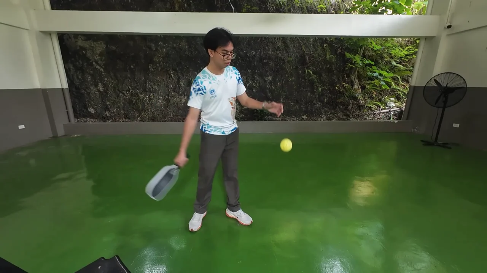

BlazePose Lite / Heavy
Pretrained landmark extractors, not the serve classifier. No manual landmark ground truth is available here, so pose-location accuracy is not claimed.
Pickleball · Computer vision · Mobile coaching
Can a phone recognize a serve and give useful coaching? A record of the models, the experiments, and what the evidence tells us so far.
Explore the findings
Drive. Lob. Topspin.
Three subtypes. One research question.
Study snapshot Expert review and phone testing pending
01 / The thesis
The thesis proposes a low-cost serve evaluation system: pose, weight shift and paddle orientation form the core; a second camera can add ball placement.
The purpose
Recognize Drive, Lob and Topspin, measure supported mechanics, and turn expert observations into concrete corrective feedback on an Android phone.
Read the thesis sourceTest the three-subtype taxonomy. The paper requires an expert distinguishability gate; its completed outcome has not been documented here.
Collect expert and beginner recordings, annotate them, and keep evaluation separate from training. Current retraining uses 209 eligible clips from three players.
Combine serve classification with deterministic mechanics checks and Coach B’s IF–THEN rules. Ball placement is an optional, separate stream.
The paper targets at least 85% stratified CV accuracy. We also examine held-out players, per-class recall and previously inspected diagnostic clips.
Coach C first labels 30 clips without outputs, then judges feedback in a second blind session. Phone testing separately checks the core pipeline’s ≤2-second target.
The central finding
High stratified scores have not translated into consistently reliable recognition across different players. Augmentation helped one matched comparison; richer features exposed a different problem: high overall accuracy can hide an almost unrecognized serve class.
The evidence points to limited player diversity, representation and capture differences. It does not isolate a single cause for every error.
Held-out-player CV after video augmentation
Diagnostic change: 46.3% → 47.4%
02 / Model findings
Explore each study under its own evaluation procedure. The original experiments, deployed assets, retraining and refinements are all included.
Clips split across folds. A player can appear in both training and validation.
An entire training player stays outside that fold’s model fitting.
175 Beginner 3/4 clips, already inspected in earlier work. Not the final Coach C test.
Select a model row to inspect its class balance. Missing scores mean that evaluation was not reported.
| Model / condition | Stratified CV | Held-out player | Diagnostic |
|---|
The v3 skeleton/motion GRU reached 56.0% diagnostic accuracy but recognized only 1.8% of Topspin clips correctly. In v4, the full-skeleton augmented GRU reached 56.6% overall with only 5.4% Topspin recall. These scores do not establish balanced recognition of all three subtypes.
The September report lists metric / center-loss GRU at 52.0% mean diagnostic accuracy, strong style augmentation at 41.5%, adversarial GRU at roughly 44–48% with unstable seeds, and adversarial + strong augmentation at roughly 36–37.5%. The best reported adaptation mix reached 58.3%. These are historical exploratory results, using older cached inputs; repeated use of the same players limits independent claims.
Nested calibration reduced probability loss, but acceptance rules fitted to reach 80% on inner development data achieved only 25.6–35.0% accuracy on accepted outer-player cases. Every final v4 policy disables confidence acceptance. The selected lean control uses 25% GRU / 75% kNN and temperature 9.244; it is a research replay candidate, with coaching-confidence acceptance disabled.
It preserves the full timeline, but input compatibility matters. The unchanged original GRU scored 51.4% with the first 128 frames, 40.6% with the last 128 and 48.0% with full-timeline resampling. The original hybrid scored 49.7%, 50.3% and 47.4%, respectively. A complete-serve pipeline needs models trained for that representation. Actual phone replay and live capture remain unverified.
03 / The other streams
Detection, geometric measurements and rules contribute different kinds of evidence. Their scores answer different questions.
| Model | Precision | Recall | mAP@50 | mAP@50–95 | Log |
|---|
These are each run’s dataset-validation figures, not measured accuracy on Coach C’s 30 clips or an installed phone. Court rows use keypoint metrics; ball and paddle rows use box metrics. Final-epoch logs do not describe a best-checkpoint test.
Pretrained landmark extractors, not the serve classifier. No manual landmark ground truth is available here, so pose-location accuracy is not claimed.
Hip displacement is normalized to body height. The shift threshold (~0.1543) uses 59 explicitly good-form baselines; the paddle band (~13.4°–165.7°) uses 52. These proxies do not directly measure force, spin or paddle-face yaw.
Coach B’s observations become deterministic cues. Directional open/closed-paddle advice remains inactive without validated direction. Coach C’s appropriateness judgments are pending.
04 / Recorded outputs
Three correctly classified examples, one per subtype, and one error illustrate the pipeline. These curated training clips do not estimate accuracy on new players.
Playback is a resized, silent copy of the original recording. Reports retain the saved inference values. The contact estimate is a wrist-speed proxy.
05 / Evaluation status
The automated studies are complete. Independent judgments and real-device measurements still decide whether the system is ready for its intended use.
24beginner clips selected
6 unused coach clips still to add
The intended quota is 10 per recorded serve category: 4 Beginner 3, 4 Beginner 4 and 2 coach clips. Beginner selection is random; the coach clips will come from the additional recordings.
Raw clips only. Coach C labels subtype and binary form before seeing system outputs.
Generate the complete outputs after Session 1. Compare against independent labels.
A second session judges feedback appropriateness without Session 1 annotations.
All 24 selected beginner clips were previously inspected diagnostically. This is a retrospective independent coach review; it cannot be described as an untouched final holdout. Independently assigned labels may change the observed class balance.
06 / Research record
Download the saved reports and machine-readable website dataset. This site displays existing experiments; it does not run a model in your browser. Older reports retain their historical wording; the current evaluation status is shown above.